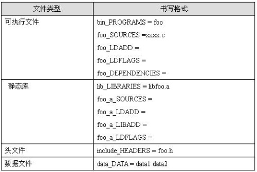
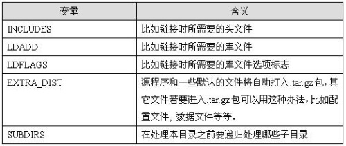
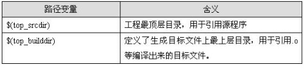

automake 和 autoconf 使用简明教程¶
步骤概览¶
- create project
- touch NEWS README ChangeLog AUTHORS
- autoscan
- configure.scan ==> configure.in/configure.ac
- aclocal
- autoheader（可选，生成 config.h.in)
- Makefile.am（根据源码目录可能需要多个）
- libtoolize –automake –copy –force（如果 configure.ac 中使用了 libtool)
- automake –add-missing
- autoconf
- ./configure && make && make install
修改 configure.scan ==> configure.ac¶
- 在 AC_INIT 宏下一行添加 AM_INIT_AUTOMAKE([foreign -Wall -Werror])，选项可根据自己需要修改，选项参见 automake 手册。
- 若需要使用 config.h 的宏，添加 AC_CONFIG_HEADERS([config.h]) 宏。
- 配置编译环境。AC_PROG_CXX->g++, AC_PROG_CC->gcc AC_PROG_RANLIB->libs，LT_INIT->使用 libtool，库可以指定 PKG_CHECK_MODULES()。
- 添加自己的检测处理（可选）。
- 在 AC_OUTPUT 上一行添加 AC_CONFIG_FILES 宏，指定输出的文件。如：AC_CONFIG_FILES([Makefile tools/Makefile])
pkg-config 的使用¶
为使工程支持 pkg-config，提供了以下的几个 autoconf 宏
PKG_PROG_PKG_CONFIG([MIN-VERSION]): 判断系统中的 pkg-config 及其版本符合兼容性要求。 PKG_CHECK_EXISTS(MODULES, [ACTION-IF-FOUND], [ACTION-IF-NOT-FOUND]): 检查系统中是否有某些模块。 PKG_CHECK_MODULES(VARIABLE-PREFIX, MODULES, [ACTION-IF-FOUND], [ACTION-IF-NOT-FOUND]): 检查系统中是否有某些模块，如果是则根据 pkg-config –cflags 和 pkg-config –libs 的输出设置<VARIABLE-PREFIX>_CFLAGS and <VARIABLE-PREFIX>_LIBS 变量。
编写自定义的 Autoconf 宏（一般不需要）¶
Autoconf 的自定义宏在 configure.ac 中调用。 #. 新建 m4 目录，在该目录中编写 xxx.m4 宏，运行 aclocal -I m4 生成 aclocal.m4: #. 在 Makefile 中添加 ACLOCAL_AMFLAGS = -I m4
编写 Makefile.am¶
- 每个目录一个 Makefile.am 文件；同时在 configure.ac 的 AC_CONFIG_FILES 宏中指定输出所有的 Makefile 文件。
- 父目录 Makefile.am 包含子目录：SUBDIRS=test tools
- Makefile.am 中指明当前目录如何编译。
编译方式¶
| 类型 | 说明 | 使用方式 |
|---|---|---|
| PROGRAMS | 可执行程序 | bin_PROGRAMS |
| LIBRARIES | 库文件 | lib_LIBRARIES |
| LTLIBRARIES | libtool 库文件 | lib_LTLIBRARIES |
| HEADERS | 头文件 | include_HEADERS |
| SCRIPTS | 脚本文件，有可执行权限 | test_SCRIPTS（需要自定义 test 目录） |
| DATA | 数据文件，无可执行权限 | conf_DATA（需要自定义 conf 目录） |
编译目标¶
编译目标其实就是编译类型对应的具体文件，其中需要 make 生成的文件主要有如下几个：可执行程序_PROGRAMS，普通库文件_LIBRARIES，libtool 库文件_LTLIBRARIES, 其它类型对应的编译目标不需要编译，源文件就是目标文件。 例如，对于 bin_PROGRAMS = target
target_SOURCES：对应 gcc 命令中的源代码文件
target_LIBADD：编译链接库时需要链接的其它库，对应 gcc 命令中的*.a, *.so 等文件
target_LDADD：编译链接程序时需要链接的其他库，对应 gcc 命令中的*.a, *.so 等文件
target_LDFLAGS：链接选项，对应 gcc 命令中的 -L, -l, -shared, -fpic 等选项
target_LIBTOOLFLAGS：libtool 编译时的选项
target**FLAGS（例如_CFLAGS/_CXXFLAGS)：编译选项，对应 gcc 命令中的 -O2, -g, -I 等选项
编译可执行程序¶
将非 main 函数所在目录的文件编译成静态链接库，然后采用链接静态库的方式编译可执行程序。 main 函数所在目录的文件加到 XXX_SOURCES 变量中。
编译库¶
Automake 天然支持编译静态库，只需要将编译类型指定为_LIBRARIES 即可。
动态库¶
需要注意的是：_LIBRARIES 只支持静态库（即*.a 文件）, 而不支持编译动态库 (*.so) 文件，要编译动态链接库，需要使用_PROGRAMS。
除此之外，还需要采用自定义目录的方式避开 Automake 的两个隐含的限制：
- 如果使用 bin_PROGRAMS, 则库文件会安装到 bin 目录下，这个不符合我们对动态库的要求；
- automake 不允许用 lib_PROGRAMS
也可以使用 libtool 来编译动态库。
libtool 库¶
libtoolize 提供了一种标准的方式来将 libtool 支持加入一个软件包， 而 GNU libtool 是一个通用库支持脚本，将使用动态库的复杂性隐藏在统一、可移植的接口中。
对于跨平台可移植的库来说，推荐使用 libtool 编译，而且 Automake 内置了 libtool 的支持，只需要将编译类型修改为_LTLIBRARIES 即可，如下为一个 Makefile.am 的例子：
lib_LTLIBRARIES=libtest.la
libtest_la_SOURCES=test.c
这里 lib_LTLIBRARIES 的意思是生成的动态库，然后指定动态库依赖的源文件 test.c，若有多个源文件用空格隔开。
需要注意的是：如果要使用 libtool 编译，需要在 configure.ac 中添加 LT_INIT 宏，同时注释掉 AC_PROG_RANLIB，因为使用了 LT_INIT 后，AC_PROG_RANLIB 就没有作用了。 如果 autoreconf 无法识别 LT_INIT 宏，你需要更新 libtool 或者在 configure.ac 里加上宏 AC_PROG_LIBTOOL ，表示利用 libtool 来自动生成动态库。 新工程中应该使用 LT_INIT 而不是使用 AC_PROG_LIBTOOL 。
格式模板¶
对于可执行文件和静态库类型，如果只想编译，不想安装到系统中，可以用 noinst_PROGRAMS 代替 bin_PROGRAMS，noinst_LIBRARIES 代替 lib_LIBRARIES。
Makefile.am 还提供了一些全局变量供所有的目标体使用：
在 Makefile.am 中尽量使用相对路径，系统预定义了两个基本路径：
automake 设置了默认的安装路径：
- 标准安装路径 默认安装路径为：$(prefix) = /usr/local，可以通过./configure –prefix= 的方法来覆盖。 其它的预定义目录还包括：bindir = $(prefix)/bin, libdir = $(prefix)/lib, datadir = $(prefix)/share, sysconfdir = $(prefix)/etc 等等。
- 定义一个新的安装路径 比如 test, 可定义 testdir = $(prefix)/test, 然后 test_DATA =test1 test2，则 test1，test2 会作为数据文件安装到 $(prefix)/ /test 目录下。
打包¶
Automake 缺省情况下会自动打包，自动打包包含如下内容：
- 所有源文件
- 所有 Makefile.am/Makefile.in 文件
- configure 读取的文件
- Makefile.am’s (using include) 和 configure.ac’ (using m4_include) 包含的文件
- 缺省的文件，例如 README, ChangeLog, NEWS, AUTHORS
如果除了这些缺省的文件外，你还想将其它文件打包，有如下两种方法：
- 粗粒度方式：通过 EXTRA_DIST 来指定。 例如： EXTRA_DIST=conf/config.ini test/test.php tools/initialize.sh
- 细粒度方式：在“安装目录_编译类型 = 编译目标”前添加 dist（表示需要打包）, 或者 nodist（不需要打包）。 例如： dist_data_DATA = distribute-this；nodist_foo_SOURCES = do-not-distribute.c
一个例子¶
例子为一个简单但完整的项目，该项目只有 test.c 源代码文件，但使用了系统中使用 pkg-config 配置的 dbus 库。
代码目录如下
ChangeLog configure.ac Makefile.am README
AUTHORS COPYING INSTALL NEWS
src:
Makefile.am test.c
生成后并修改过的 configure.ac 文件
dnl Process this file with autoconf to produce a configure script.
AC_PREREQ(2.59)
AC_INIT(dbus-tutorial, 1.0)
m4_ifdef([AM_SILENT_RULES], [AM_SILENT_RULES([yes])])
AC_CANONICAL_SYSTEM
AM_INIT_AUTOMAKE()
AC_PROG_CC
PKG_CHECK_MODULES(DBUS, dbus-1)
PKG_CHECK_MODULES(GLIB, glib-2.0)
PKG_CHECK_MODULES(DBUS_GLIB, dbus-glib-1)
CFLAGS="$CFLAGS -O0 $DBUS_CFLAGS $GLIB_CFLAGS -g -Wall -Werror"
LDFLAGS="$LDFLAGS $DBUS_LIBS $GLIB_LIBS"
AC_CONFIG_FILES(Makefile src/Makefile)
AC_OUTPUT
主目录 Makefile.am
SUBDIRS=src
代码目录 Makefile.am，configure.ac 中使用 PKG_CHECK_MODULES 定义了 DBUS 和 GLIB 及 DBUS_GLIB 前缀。
bin_PROGRAMS= test
test_SOURCES=test.c
test_CFLAGS = @DBUS_CFLAGS@ @GLIB_CFLAGS@
test_LDADD = \
@GLIB_LIBS@ \
@DBUS_LIBS@ \
@DBUS_GLIB_LIBS@